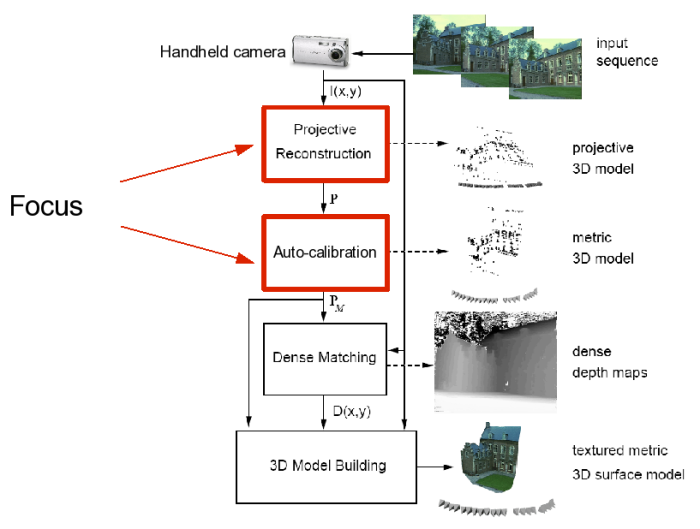

Reconstruction and Auto-Calibration Using a Handheld Camera
The purpose of this ongoing project is to implement a system that takes an input video sequence of a static scene and outputs the position of the camera at each frame, estimates of the intrinsic parameters, and reconstructed 3D points. The participants have developed familiarity with recent methods of automatic reconstruction from uncalibrated cameras, which are used in 3D photography, match-move applications in the entertainment industry, and photogrammetry.
I (Ricardo Fabbri) have matlab and C++ code for many of the parts of this project, and other participants have been putting them together to form a more complete system. I have supervised and helped other students very closely on this project.
Check out a video of a working system:
Stages of the System

Implementation Guidelines
- Detect interest points in each image and match them using similarity of appearance. Usually SIFT features are used [Lowe]. I have code for SIFT which is integrated with the rest of the steps below. However, numerous recent studies have pointed to the combination of a Hessian-Affine detector with a SIFT descriptor as the best solution for wide baseline and 3D scenes; including this into the reconstruction system would be of great benefit. Implementing this stage involves getting familiar with sparse point features in practice, such as sensibly selecting the parameters.
- Compute the epipolar geometry / fundamental matrix between pairs of views. This is performed using a robust estimation strategy, called RANSAC. Only reliable feature matches are retained. I also have code for this part. The task of the student is to develop a working knowledge of fundamental matrix estimation and the geometry of multiple views.
- Two-view reconstruction. From two selected views, or key frames, obtain
initial cameras and reconstructions.
- Obtain two canonical camera matrices as described in [Hartley and Zisserman]. These camera matrices differ from the true ones by a 8-parameter ambiguity, but we can nevertheless work with them for the purpose of enforcing consistency between the whole video sequence.
- Triangulate the two-view matches to get initial 3D points. This step must be performed as well as possible, since the entire system will rely on it. Use optimal triangulation [Hartley and Zisserman, ch. 12].
- Incrementally add more views. The output of this stage will be a multiview projective reconstruction. Starting from the two key frames, incrementally add another frame, forming the key frame set. Impose consistency of the new frame with the previous key frame set. This is performed using camera pose (also called resectioning) from 3D points to 2D points, assuming the canonical cameras as true ones. A robust RANSAC strategy guides this process in order to eliminate false feature correspondences. Keep adding frames and imposing consistency once no new frame can be added. We have code for the basic components, but the student will have to put it together in order to obtain a camera resectioning routine that works with RANSAC. This can be done with the aid of students in our lab.
- Evaluate the projective reconstruction. The camera parameters (rotations, translations, and intrinsic parameters) and the 3D reconstruction of matching feature points are now known up to 8 degrees of freedom. The hardest part of the project is now done. The student must evaluate this reconstruction before proceeding. One way of doing it is to get the intrinsic parameters of the camera using some traditional calibration board, and, then, using these parameters together with the projective reconstruction obtained in step 4, one can generate a final metric reconstruction. By showing the positions of the cameras, the student can verify if it looks ok.
- Auto-calibration (Optinal/Challenge). Even without knowing the intrinsic parameters of the cameras, the student can still generate a final reconstruction from 4), bypassing any manual calibration procedure as done in 5). This is performed by solving so-called auto-calibration equations. We have no code for this part, but the student can ask for help in our lab.
- Dense stereo and Texture-mapping. (Optinal/Challenge). This will provide a visually pleasing reconstruction of an object captured by the video sequence. This involves doing some dense-stereo using the known cameras in order to generate dense 3D structure, followed by texture-mapping by backprojecting the image intensities onto the 3D structure.
- [Pollefeys] Marc Pollefeys et al. Visual Modeling with a Handheld Camera, International Journal of Computer Vision, 2004. See also the PhD thesis, Marc Pollefeys, K. U. Leuven 1999: (PDF)
- [Hartley and Zisserman] Hartley and Zisserman's book, Cambridge University Press.
- [Lowe]Iryna Gordon's Msc thesis, U. of British Columbia. Advisor: D. Lowe. (PDF).
Links
- University of Washington's Phototourism. Source code available in Bundler. Everybody is using it!
- Google Panoramio's Look Around
- 2d3: a company offering a range of products based on the technology used in this project
Ground-Truth Datasets
- Kung-Fu Fighter - a real dataset with cameras and 3D points
- Kung-Fu Girl - a synthetic dataset
- Oxford datasets - The model house and corridor sequence from the following link provide a few images with corners and camera parameters for each image, as well as reconstructed 3D corners.
- Middlebury multiview datasets - the standard dataset of the area, providing many calibrated views of a single easily-segmentable object.
Student Presentations
- Shawn Kitchner's class project presentations
<< home << en161